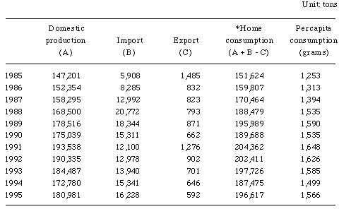

"Cacao-related products" refer to cacao beans, processed cacao ingredients, and their final products (chocolate confectionery and cocoa powder). Japan imports all of its cacao beans. The Japanese chocolate market has grown substantially in parallel to the Japanese economy. Consumption of chocolate boomed from the late 1950s to early 1960s during which chocolate was at times called the "King of Confectionery". In the late 1970s and early 1980s, consumption slowed in growth due in part to the rise of other snacks and the weaning of the consumer from sweet confectionery.
That is, in the late 1950s and early 1960s, the only confectioneries generally available were caramels, candies, biscuits, and the traditional Japanese confectioneries, so chocolates found popularity for their sweetness. Later, however, a succession of foods new to Japan and competing with chocolates appeared such as ice cream, snack foods, chilled deserts (puddings, cream puffs, etc.), and fresh fruits. Chocolates now hold only about a 10 percent share of the overall confectionery market.
CHOCOLATE PRODUCTION, IMPORT, EXPORT
AND PER CAPITA CONSUMPTION IN JAPAN

In the latter half of 1980s, Japan's chocolate and cacao market underwent another period of relatively strong growth. The collapse of the "bubble economy" of inflated values and expectations in late 1991, however, caused a decline in purchasing and consequently caused consumption to drop. An additional factor was the diversification of tastes. The market picked up somewhat in 1995, but it is still too early to say if it is really on the way to recovery.
The Japanese still consume less chocolate and cocoa per capita than people in the western industrialized countries. The traditional Japanese diet has been centered on rice and the Japanese have only gained familiarity with these items in past few generations. In addition, there is strong competition from traditional Japanese and other confectioneries and desserts.
Almost all of the chocolate sold in Japan is milk chocolate. The cacao beans mostly come from Ghana, which has established a reputation for itself as being a stable source of supply. Compared with other consumers, however, the Japanese choose their chocolate less by the beans and more by the milk used. The chocolate market has also in recent years seen a shift toward lighter-tasting chocolates. Health has further become a new theme.
With the market maturing and families having fewer children (the ratio of children in the population falling), manufacturers have further adopted marketing strategies designed to carve out distinct niches for their products as a means for their survival. There has also been a steady increase in imports of foreign products due to drastically reduced tariffs. Seasonally, demand for chocolate is boosted at Valentine's Day, when in a gender reversal it is the women who give chocolates to the men, and the Christmas season. There is particularly deep-rooted demand for chocolate gifts on the former occasion.
Cocoa, imbibed in the form of hot chocolate and chocolate milk, has been a minor beverage in Japan up until now and demand has been low. This is because of its image as a sweet, heavy drink for the cold winter season. Recently, however, cocoa has come under the spotlight as a health drink due to reports of its nutritional benefits at a prominent scientific conference and TV coverage. This has triggered a cocoa boom. Housewives in their fifties and older are newly purchasing cocoa. An increase in sales to the middle aged and senior citizens is consequently anticipated.
(1) Chocolate Confectionery
Consumption Trends: According to the Chocolate & Cocoa Association of Japan (CCAJ), consumption of chocolate products grew steadily in Japan in the late 1980s rising from the 151,624 tons of 1985 to the 200,000 ton level in 1991. With the collapse of the "bubble economy", however, consumption started to decline and fell to 187,475 tons in 1994. In 1995, it rose to 196,617 tons. Some sectors of the industry hope this signifies a recovery, but other sectors take a more cautious stance and judge it too early to say the market is recovering. Manufacturers also assess the value of the market somewhat differently. One of the major manufacturers, however, estimates the market for food in general to be worth about Yen 30 trillion in retail terms, confectionery to be worth from Yen 2,500 billion to Yen 2,600 billion, and chocolate to be worth about Yen 400 billion.
Viewed by volume, the total amount of chocolate consumed is fairly large, but still small on a per capita basis. Statistics of Office Internationale du Cacao et Chocolat et du Confiserie (OICCC) show that Japan consumed 197,700 tons of chocolate in 1993 putting it at fifth place in the world after the U.S. at 1,274,000 tons, Germany at 558,400 tons, the U.K. at 420,200 tons, and France at 264,500 tons. On a per capita basis, however, it consumes only 1.58 kg or close to the lowest level among the industrialized nations. The average Japanese consumes about one-sixth the amount of chocolate as his or her counterpart in Switzerland (9.69 kg), the country with the largest per capita consumption, and less than one-third that of his or her American counterpart (4.93 kg). The figures of the CCAJ similarly show that domestic consumption of chocolate reached 1,566 grams per capita. The per capita in 1995 figure has held in the range of 1,500 to 1,600 grams since the start of the 1990s.
The CCAJ gives as reasons for the low level of per capita consumption (1) the large number of types of fruits and other confectionery competing with chocolate (there is for example little competition from fruit etc. in Switzerland) and (2) the fact that chocolate has been available in Japan only relatively recently or about 100 years compared with the 300 to 400 years in Europe and therefore is still not that entrenched in the culture. One major manufacturer also points to differences in the diet. Chocolate, it said, is an originally foreign confectionery and is not traditionally served as an after-dinner dessert as in Switzerland and other countries. It is less frequently eaten by adults in Japan. Efforts have been made to tailor chocolate to Japanese tastes, but there is strong competition from traditional Japanese confectioneries, cakes, pudding, candies, yoghurt, and fruit for snacks and after-dinner desserts.
Consumer Preferences: The CCAJ reports that the Japanese chocolate market is number one in the world when it comes to variety, but that almost all of that is milk chocolate. Industry sources indicate that the trend in recent years has been toward lighter-tasting chocolates (lighter sweetness and lighter "palatability"). With the market maturing and preferences becoming increasingly diversified, assortment products have also made their appearance. Another new trend has been an emphasis on health.
By gender, 60 to 70 percent of the chocolate is consumed by females and 40 to 30 percent by males. By age, middle and high school students and young women constitute the biggest customer groups. Cartoon and other character-based chocolates are popular among kindergarten and lower school aged children, but these are bought for them by their parents in most cases. Some manufacturers are therefore trying to entice parents to buy them for their kids by exclaiming their anti-cavity effect. According to one major confectionery manufacturer, however, the relatively older consumer prefers more orthodox types of chocolate. In particular, it said, housewives in their thirties and forties raising children are frequent purchasers.
Looking at chocolates containing other food ingredients, chocolate covered nuts enjoy broad popularity from all age groups and represent the largest sector of consumption. This is followed by chocolate-covered fruits, in particular, raisins. Consumption of liquor bonbons is limited to people in their thirties and up. Chocolate-covered fruits and liquor bonbons are very sweet and therefore are no longer as popular as in the past.
Seasonal Demand Trends: Viewed over the year, consumption is characterized by a peak in demand during the February Valentine's Day season (gift demand), a smaller peak in Christmas, and a slump during the summer. Demand drops during the summer due to the tendency of chocolate to melt under the heat. Chocolate combined with baked confectionery such as chocolate-filled pretzel sticks and rolls and chocolate-covered products are sold the year round and serve to make up for the drop in the summer. During the summer, also, chocolate is sold mixed with ice-cream. Also marketed are chocolate confectioneries made with very low melting points designed to be eaten after being chilled in refrigerators.
(2) Cocoa Products
Consumption Trends: According to one of Japan's largest cocoa manufacturers, the home cocoa market was worth around Yen 10 billion from fiscal 1991 to 1994, but doubled to Yen 20 billion in fiscal 1995. The market is still expanding and is approaching the Yen 30 billion level. Another of the majors estimates the Japanese cocoa market will be somewhat smaller or Yen 17 billion in 1996 and Yen 25 billion in 1997 and for the time being is working to boost it to close to the market for black tea (Yen 40 billion).
Cocoa has been a minor beverage in Japan up until now. The CCAJ reports that per capita consumption of cocoa beverages is about 17 to 18 cups (compared with 300 cups in Europe) or far less than the approximately 300 cups of coffee, 100 cups of black tea, and 1,000 cups of Japanese tea.
Cocoa has however experienced a sudden surge of popularity since the end of 1995. According to the CCAJ, this was triggered by an international symposium (hosted by the CCAJ) held on September 27, 1995 at the location of the central business organization Keidanren, where the benefits of cocoa as a health food was reported. These health benefits were further covered in a popular daytime TV program aimed at housewives on December 4, 1995 which then ignited a boom. The health benefits of cocoa touted were (1) the inclusion of edible fiber and iron in abundant amounts and the resultant effect of prevention of constipation, colon and rectum cancer, and anemia, (2) the inclusion of polyphenol, which has the same properties as vitamin E or beta-carotene, known as antioxidants, and therefore the prevention of arteriosclerosis and diabetes, (3) the inclusion of components preventing ulcers and suppressing cavity-forming plaque, and (4) the relaxing effect of its unique component theobromine.
There have been two previous cocoa booms in Japan up to now. The first was in the late 1970s with the appearance of instant cocoa. The second was several years ago when canned cocoa drink begun being offered in vending machines. In both cases, the stress was placed on convenience. These booms proved transitory, however. This time, the industry hopes that the newly found nutritional effects will help make cocoa an established drink in the public. Toward this end, manufacturers have been marketing lighter tasting products to reduce the heaviness of cocoa.
The main segment of the population driving the recent growth of the cocoa market has been the new group of housewives in the fifties and higher. Promotional campaigns and TV programs successively led to explosive popularity of cocoa since December 1995. The percentage of households purchasing cocoa reached 35.7 percent as of the end of February to the beginning of March of 1996, according to a major chocolate manufacturer. This represents an astounding 80 percent rise compared with the same period of 1995. Among the different age groups, the greatest growth was in housewives in their fifties and up. This was not a temporary fad among these women. Purchases have continued even after December 1995. The female consumers are buying cocoa not for their children, but for themselves. Further, they are making repeat purchases in an increasing number of cases. This is believed by parts of the industry to suggest that cocoa will remain popular over time. That is, housewives in their fifties and up have rediscovered the good taste of cocoa and are being attracted by its healthfulness.
Consumer Preferences: According to one major manufacturer, purchasers of cocoa may be divided into two distinct groups - one concerned with the taste and the other with the healthful features. The former prefer to drink the cocoa straight in search of the adult taste. The latter drink it mixed with sweeteners and milk. The manufacturer hopes to go one step further from the present, where the health benefits are stressed, and establish cocoa as a daily beverage. It is trying to broaden the pool of purchasers from the over-50 housewives to include women in their 30s and 40s and in the end hopes to improve its product lineup so that all age groups are covered.
Many popular cocoa products now sold for household use in Japan mostly come in the form of dried powder (in bags or cans) designed to be measured out by spoons, but pastes made of cocoa mixed with fresh cream and marketed packed in individual serving sized tubes have been gaining popularity.
(1) Chocolate Confectionery
Overall Trends: Japan imports all of its cacao beans (and large amounts of cocoa butter) which it then grinds to make chocolate and cocoa. There are about 20 firms with grinding facilities. These may be divided into three groups: (1) the major confectionery manufacturers, (2) specialized intermediate product processors, and (3) a chocolate production cooperative comprised of smaller firms. Japan first began producing chocolate in the late 1800s. Chocolate first began being made straight from the cacao bean to final product stage in the late 1910s and early 1920s during which it also became widely available throughout the country. Imports of cacao beans were of course cut off during the second world war causing production to come to a halt, but resumed in 1950. Before the war, only a small amount of chocolate had been produced due to the low standard of living of the general population, but production soared starting in the 1960s. Today, there is competition from cakes and other fresh western confectioneries and snacks and also from traditional Japanese confectioneries, so chocolate holds just a 10 percent share or so of confectionery production. Production of chocolate has essentially followed consumption. It grew smoothly in the 1980s, but dropped after hitting a peak of 193,538 tons in 1991 and fell as low as 172,780 tons in 1994. Production recovered somewhat in 1995 to 180,981 tons, however. While the amount of cocoa products is small, the same curve is drawn for production as with chocolate.
One of the manufacturers states that the Japanese chocolate industry is currently facing three problems -mature market, deregulation, and differences between domestic and overseas prices - all of which serve to make the market one difficult to make a profit in. In deregulation, the industry has been hard hit by the reduction in tariffs agreed upon in the Uruguay Round of the GATT negotiations and the subsequent steady increase in imports of Western chocolates. On the other hand, they are unable to import inexpensive materials themselves since prices for wheat, milk, and sugar have been fixed at the same level as domestic materials. The industry hopes that some way will be opened for it to purchase inexpensive materials from abroad so as to ease the high domestic costs.
In Japan chocolate is produced by both chocolate manufacturers of all sizes and by confectionery stores, cocoa beverage manufacturers, and manufacturers of snack foods, while cocoa is produced by the major confectionery manufacturers and coffee manufacturers.
Product Development: Japanese manufacturers have recently been making frequent use of the term "new palatability" in the process of product development. This is usually used to refer to a chocolate which is soft, smooth, melts in the mouth, and slides pleasantly down the throat. Unlike Europeans, Japanese avoid the heavy sweetness of bar chocolate (solid type) and prefer the less sweet milk chocolates. Milk chocolate includes white chocolate made by cacao butter, but this is purchased by only a limited sector of the public. One major manufacturer reports that 100 percent chocolate, called "bitter" or "black" chocolate, represents less than 10 percent of the market. Middle and high school aged students in particular stay away from overly sweet tastes and prefer chocolates which do not leave an aftertaste. This leads to the preference for "light-tasting" chocolates.
PRODUCTION OF CHOCOLATE & COCOA PRODUCTS IN JAPAN

This light palatability is brought out by mixing in cacao butter (fat) or using fresh cream. The latter technique takes note of the fact that almost all milk chocolate in Japan is made using powdered milk. Compared with powdered milk, fresh cream gives a cleaner taste. Mass produced chocolate, however, unlike the chocolate sold at corner confectionery shops (so-called "fresh chocolates"), require a longer shelf storage life. That is, corner confectionery shops can make chocolates which last only one to two days, while mass produced chocolates have to last one year in the case of bar chocolate and from six months to one year in other cases. This problem has been cleared by new technology. When using fresh cream, the moisture of the cream is held by butter so as not to cause spoilage.
The "health-oriented" marketing strategy was launched just recently by major confectionery makers with its "sugarless" chocolate products. New regulations governing nutrition enforced starting in May 1996 defined "sugarless" products as products containing only sugar alcohols and vegetable fiber as sweeteners and with a content of monosaccharides and bisaccharides of less than 0.5 percent. In response, the confectionery manufacturer developed a unique process for removing the sugar content from powdered milk while leaving the milk flavor. The manufacturer expects sales of its "sugarless" chocolate to reach Yen 10 billion a year riding the health boom. This is in a market of Yen 300 billion or so where a hit product is one which racks up sales of Yen 3 billion a year.
Other manufacturers have come out with similar products in response.
According to still another manufacturer, sugar is high in sweetness and can be replaced by oligosaccharides, xylitol (a type of sugar alcohol), etc. Xylitol, in particular, is frequently used for sugarless products (gum, candies, etc.) in Europe. It may come into widespread use in Japan as well once approved by the Ministry of Health and Welfare. Some manufacturers, however, believe that sugar will always be predominant when it comes to sweeteners and prefer not to plunge too deeply into difficult to digest artificial sweeteners. Recently, manufacturers have also been successively coming out with new "assortment products". These comprise packs of small versions of their other popular brand series and enable the consumer to enjoy a diverse range of chocolates at a low price. The Japanese consumer is becoming increasingly concerned about prices, so this new marketing approach aims at both reasonable price and diverse assortments.
One of the major manufacturers also launched a hit "mesh-type" chocolate in 1995. This was a fancy chocolate given a mesh-like shape of thin strands of chocolate and proved extremely popular among young women and girls. Other unique new products include chocolates containing traditional Japanese foods such as small dried sardines or pickled plums marketed by a minor manufacturer. Among the chocolates combined with other snack foods, the series of thin chocolate-covered pretzel sticks enjoy strong popularity on the market. According to its manufacturer, these account for 40 percent of the chocolate-covered confectionery market. A rival manufacturer has come out with a competing chocolate-filled pretzel stick and is putting up a good fight.
These snacks go well with the trend toward lighter foods. The manufacturer of the chocolate-covered pretzel sticks has recently announced it will market a crunchy, whipped "baked chocolate" (light air-filled chocolate pastry made from cacao mixed with eggwhite).
Major Manufacturers: Japanese chocolate market is dominated by the five majors which together hold over a 50 percent share of sales.
The major chocolate manufacturers may be divided into two groups: two old established manufacturers of 80 to 100 years history and another three relatively recently established manufacturers. The latter group lack the established niches of the former in orthodox chocolates, so have taken the strategy of constantly developing upmarket products and nut and snack related products. The former group takes a more conservative marketing stance. All of the manufacturers, however, believe that they can only survive by keeping up with the changes in consumer tastes while taking great care with their established lines and long sellers. One of the newer manufacturers related that it was able to sell any luxury product it wanted in the heady 1980s when the stock and real estate markets were booming, but after the collapse of those markets a luxury image was no longer enough and more creative new products became necessary. Products using new technology (products which could not be produced before recently technical breakthroughs) are now important.
Moves to Overseas Markets: The mainstream assessment of the future of the market is that families will continue becoming smaller and that effort will therefore have to be made to make confectionery targeted at specific age groups to broaden the appeal to all parts of the population or else current levels of consumption will not be able to be maintained or raised. Further, in addition to the tough competition with other desert items, there has recently been an increase in imports. The mature Japanese market will no longer be enough for domestic manufacturers and therefore they are starting to consider developing overseas, in particular, Asian markets. One of the old chocolate manufacturers is trying to stay away from extreme, new products and to make orthodox confectionery based on global standards. This is so that it does not limit itself to approaches working only in the Japanese market and constitutes a stepping stone in its strategy of future local production in the rest of the Asian market. That manufacturer believes that Japanese products would not sell in the European market due to the strength of local products there.
(2) Cocoa Drinks
Domestic production of prepared cocoa powder, primarily sweetened cocoa with milk, showed a sharp rise in 1995, reaching nearly 4,000 tons, up about 60 percent from the level in 1994, due to the boom of cocoa drinks. In value, production also showed a more than 50 percent rise. On the other hand, domestic production of unsweetened cocoa powder remained at about 2,500 tons in 1995, up about 10 percent from the previous year. In Japan, production of home-use instant cocoa accounts for about 30 percent of total production while pure cocoa drink comprises about 20 percent. The remaining 50 percent or so is supplied to industrial users producing products such as canned cocoa drinks and cocoa drinks for sales through vending machines. The two largest manufacturers together hold a more than 80 percent share of total production. Recently, some manufacturers started production of cocoa drinks to cash in on the growing market.
Cacao Beans and Cacao Butter: Japan mostly imports cacao beans and cocoa butter. Imports of cocoa mass and cocoa cake are relatively small.
According to the CCAJ, the reason for the small imports of cocoa mass is the blending. In the production of chocolate, the general practice is to improve the taste by mixing "flavor beans" into the "base beans". (The blending rate is generally 80 to 90% base beans and 10 to 20% flavor beans.) Starting around 20 years ago, the cacao producing nations began primary processing of beans (processes up to grinding) as part of their industrialization schemes, but naturally try to avoid blending foreign beans in with their own production. Therefore, there are problems with flavor and quality in cocoa mass imported from these countries. In most cases, Japanese directly import several types of cacao beans and blend and grind them themselves.
The reason for the large imports of cocoa butter is that there is both no need for blending and, further, the consumption of cocoa powder in Japan is itself small. Explaining this with reference to the production process, the cacao mass produced after grinding cacao is either fed to a mixing process or else fed to an oil-extracting process. The cocoa butter separated at the oil-extracting process is fed back to the mixing process for production of chocolate, while the residue after the separation of the cocoa butter is fed to a grinding process to make cocoa. Since Japanese consumption of cocoa is relatively small, when too much cocoa butter is produced at the oil-extraction process, there is too much cocoa produced. Therefore, in many cases manufacturers import just cocoa butter from abroad.
Japan imports all of its cacao in the bean form and relies completely on foreign sources of supply. Cacao is produced in the region between the Tropics of Capricorn and Cancer (from latitude 23 degrees north to latitude 23 degrees south). The biggest producer of cacao beans is the Ivory Coast, but Japan mostly imports its base beans from Ghana. On the other hand, most of the flavor beans are imported from Latin America (Venezuela, Equador, Trinidad and Tobago, etc.)
Of the 40,996 tons of cacao beans Japan imported in 1995, 29,643 tons or over 70 percent were from Ghana. This was followed by 3,370 tons of beans from Brazil, 2,882 tons from Equador, 2,019 tons from Venezuela, and 1,463 tons from Malaysia. Ghana is a traditional major producer of cacao beans and held top position in the world up to 15 to 16 years ago. It is held in high regard for the stable quality of its beans and has consistently been the top supplier for Japan. The imported cacao beans are bought on the London international market and brought into the country through leading Japanese trading firms. Production of cacao is susceptible to the weather (in particular is damaged by long rains or dry spells), so the market fluctuates tremendously. Therefore, purchases are handled by the large general trading companies which are better positioned to bear the risks involved with their huge financial resources and global information networks.
A look at recent trends in Japan's imports of cacao beans shows that imports steadily rose in the late 1980s and climbed from the 38,326 tons of 1986 to 50,516 tons in 1991. Imports subsequently declined as the Japanese economy entered a recession and dropped to 36,142 tons in 1994, but picked up again to 40,996 tons in 1995.
Chocolate: Imports of chocolate products reached 12,992 tons or the first time over 10,000 tons in 1987 and hit a peak of 20,772 tons in 1988, but later declined and fell to 12,100 tons by 1991. Imports have generally risen since then however and reached 16,228 tons by 1995. Exports are small in volume (592 tons in 1995). A look at 1995 figures shows that imported chocolate products account for 8.3 percent of the market in terms of volume (in domestic consumption of 196,617 tons in 1995). The growth in imports was spurred by the reduction of tariffs to 10 percent in fiscal 1988. Some foreign manufacturers previously pulled out of Japan due to differences in tastes, but recently have returned to the market.
Among the suppliers, in 1995, the U.S. continued to lead by supplying 5,216 tons or over 30 percent of the imports, but the Europeans put up a good fight as well. After the U.S. came Australia with 2,071 tons, Belgium with 1,653 tons, France with 983 tons, and Switzerland with 912 tons. Japan has imported over 5,000 tons of chocolate products from the U.S. every year for the past few years due to strong marketing campaigns from American manufacturers. Among some of the imports from the U.S. are shipments from American plants of European manufacturers (Nestle etc.) American products, compared with Japanese ones, feature differences in the base beans (most American products use Brazilian beans, while Japanese ones use Ghanian beans) and differences in the stickiness.
JAPAN'S IMPORTS AND
GRINDING OF CACAO BEANS

Source: MOF, CCAJ
JAPAN'S IMPORTS OF CACAO RELATED PRODUCTS

Source: MOF
Examining imports of chocolate products by type (chocolate including other ingredients, pure chocolate, etc.), most of the chocolate products imported contain some other ingredient. This reflects the preference of consumers for other ingredients rather than 100 percent chocolate. In 1995, Japan imported 9,067 tons of chocolate containing other ingredients, 6,164 tons of pure chocolate, and 997 tons of other chocolate products. The U.S. led in all of these categories.
Cocoa Powder: Cocoa powder is imported in the form of both sweetened product and unsweetened product. Imports of unsweetened cocoa powder have been running at the level of about 6,000 tons each year since 1988. Imports of sweetened cocoa powder are 2-2.5 times larger than those of the unsweetened type. Imports of sweetened cocoa powder have been showing remarkable growth in recent years; from about 13,700 tons in 1992 to about 16,900 tons in 1995 due to the price-competitiveness of sweetened product vis-a-vis domestically produced products. In the Japanese market, foreign brands such as Van Houten, Nestle and Hersey have established positions although their shares remain much lower than those of major Japanese manufacturers.
A look at imports of unsweetened cocoa powder by source shows that the Netherlands is the largest supplier, exporting 2,000-3,000 tons each year, followed by Singapore with annual export volume of between 1,200-1,600 tons in the past four years. Other main suppliers are Germany and the U.S. Since 1994, Thailand has surfaced as one of the main import sources of unsweetened cocoa powder. Looking at imports of sweetened cocoa powder, Singapore exported 8,000-10,000 tons a year over the past four years, making the country the top exporter. The Republic of Korea ranked second, exporting 4,000-5,000 tons annually. Imports from Malaysia, the third largest supplier, have been showing a rapid increase since 1993.
Cacao Beans: Cacao beans are imported through the large trading companies and delivered directly to firms with grinding facilities. There are about 20 firms with grinding facilities including three specialized intermediate product processors (members of the CCAJ), large and medium sized confectionery manufacturers engaged in integral production from the grinding of cacao beans to production of the final products, and a chocolate production cooperative (comprised of 38 member companies of which about 20 are currently actually producing chocolate or cocoa products). Production of chocolate or cocoa entails considerable processing from the cacao bean stage, so facilities are larger than in other parts of the confectionery industry. Smaller confectionery manufacturers therefore purchase intermediate products from the specialized processors or the cooperative or sometimes use imports.
The specialized processors supply chocolate or cocoa powder and other intermediate products mainly to the smaller chocolate and confectionery manufacturers. There are on the other hand about 15 integrated manufacturers including the five majors. The business cooperative was set up jointly by small confectionery manufacturers to produce intermediate products and has a production capacity of 2,700 tons of cacao mass and 6,600 tons of sweet milk chocolate a year which it supplies to its member firms.
Chocolate Confectionery: Chocolate is sold through the system for distribution of confectionery, that is, there is no distinct channel for the distribution of chocolate. Confectionery may be divided into mass produced confectionery and handmade confectionery by distribution. Mass produced confectionery is normally sold wholesale by the manufacturer and supplied through a primary or second rank of wholesalers to retail outlets. Manufacturers with their own chains of retail outlets will however supply those outlets directly. There are about 10 major wholesalers of confectionery and these have considerable influence in the distribution process. Normally, small retail outlets are supplied through a second level of wholesalers, but retail outlets in rural areas and small outlets in the large cities are sometimes supplied by a third level of wholesalers.
The superstores and convenience stores hold an overwhelming share of the retail sales of mass produced confection ery. For chocolate, there is further the distinct niche of sales at the ubiquitous railway station kiosks and stands at various sporting events (baseball games etc.) The share of small retail outlets has been falling. Department stores handle little standard types of chocolates, which fall under the category of mass produced confectionery, and mostly deal in luxury lines of manufacturers with their own shops in the stores.
Cacao Powder: Cacao drink products are sold mainly through supermarkets when it comes to the home use products. In recent years, the share of convenience stores has been rising. In the case of industrial use products, cocoa powder is mainly supplied to canned cocoa manufacturers.
6.Import Related Regulations and Tariffs
Most imported cacao beans and primary processed ingredients (cacao mass, cocoa cake and cocoa powder) are eligible for most favored tariff rates because they are imported from developing countries.
The Japanese government has gradually reduced tariff rates for chocolate confectionery since 1980 when the rate was cut to 33.8%. The rate was further reduced to 31.9% in 1982, 20.0% in 1983 and 10.0% in 1988. Japan's tariff rate is the second lowest in the world next to the United States.
Cacao beans imports are covered by the Food Sanitation Law and Plant Quarantine Law while cocoa powder and chocolate confectionery are subject to the Food Sanitation Law.
7.List of Related Organizations
Chocolate & Cocoa Association of
Japan (CCAJ)
3-10, Ginza 8-chome,
Chuo-ku, Tokyo 104
Fax: 81-3-3289-4598
Japan Chocolate Industrial Corporation (JCIC)
3-13, Higashisakashita 2-chome,
Itabashi-ku, Tokyo 174
Fax: 81-3-3967-0915
 TO CONTENTS
TO CONTENTS